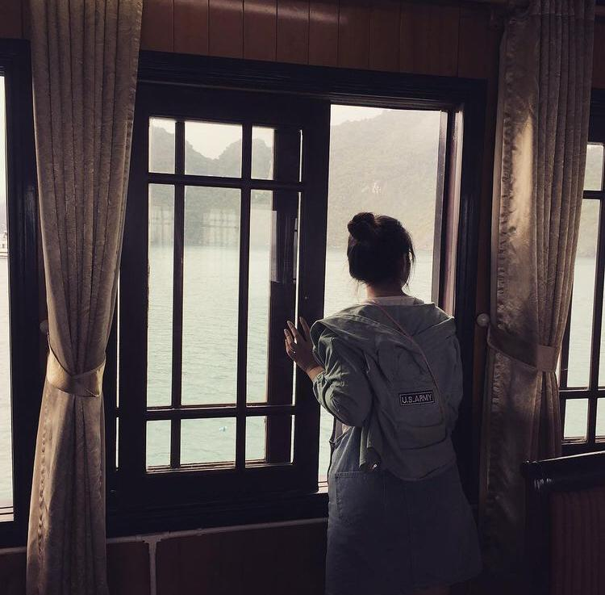

2000年，6月12日。我在马来西亚吉隆坡出生了。马来西亚是位于东南亚一个多元民族文化的国家，马来西亚有一半的人口是马来人，少数是华人、印度人和土著。马来西亚华裔把中文的博大精深和华人的传统文化代代相传的保留了下来。 因为多元种族的关系，马来西亚有很多特别的美食和文化，但是四季为夏的高温真的不是每一个人都受得了。
2020年，1月14日。我到美国加州上学，现在是圣荷西加州州立大学软件工程专业的一名学生。圣荷西是位于美国西海岸一个华人人口较多的城市。 挺喜欢生活在圣荷西的，天气宜人，也认识了很多来自世界各地的朋友，只是家人不在身边了，只身一人还是有些孤独。
12 June, 2000. I was born in Kuala Lumpur, Malaysia. Malaysia is a country in Southeast Asia, Kuala Lumpur is the cultural, financial and economic centre of Malaysia. Malaysia is multi-ethnic and multi-cultural which half the population is ethnically Malay, with minorities of Chinese, Indians, and indigenous peoples.
14 January, 2020. I went to the United States to pursue my degree in California. I am now a student in San Jose State University majoring in Software Engineering. San Jose is notable as a center of innovation on the west coast of the United States.

喜欢钩针编织很多年了，编制了无数的小玩偶和吊坠，还有帽子和围巾。享受编制时漫长过程和编制后快乐的成果。
喜欢烹饪和烘焙，但是手艺非常差，还在研究和琢磨的过程中成长着。
喜欢编程，总觉得写代码时的时间过的特别快，听说快乐的时光特别短暂，那应该是喜欢编程的吧，至少并不讨厌。
Crochet. I've been crocheting for many years and have created a lot of keychains, hats and scarves, I enjoy the long process of crocheting and the sense of achievement after crocheting.
Cooking. I love cooking and baking a lot but there is still a long way to go, I am still learning and there is much more hardwork I have to pay.
Programming. Time flies when I am coding, and people saying that time is short when you are happy, so I guess I like programming, at least I enjoy it.